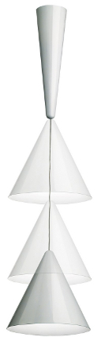

Description
|  |
Powder-coated spun aluminium lamp with a hidden pulley system. In this lamp the cord winder is concealed by a cone shaped ceiling rose (16 cm diameter x 56 cm high) which supports the reflector head, another larger cone (39 cm diameter x 38 cm high) and the simple lead supplying power to the bulb. The variable distance between the two cones allows different focuses and generates shifting perceptual relationships between the two cones.